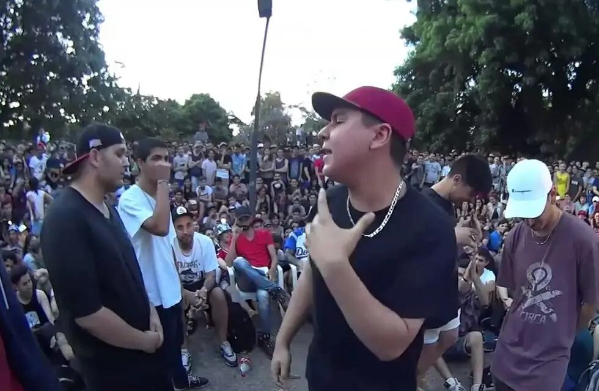
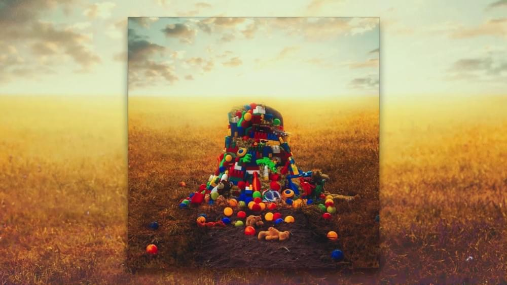
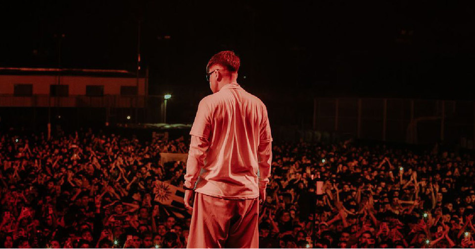

El Quinto Escalon
El nombre del evento viene dado por la localización, la escalera de cinco peldaños del Parque Rivadavia, ubicado en Caballito, Buenos Aires. Por aquel entonces Ysy A, tan solo tenía trece años, en unos inicios se reunían diez o quince amigos para hacer Freestyle, más tarde, la voz e invitaciones correrían hasta llegar a venir personajes destacados en la escena del rap, lo que atrajó a un mayor número de personas. Se uniría a la organización del evento Matías Berner, conocido como Muphasa MC, además de Juancín y Daro. En abril de 2012, Ysy A, toma las primeras grabaciones de lo que era El Quinto Escalón, a lo largo de las batallas se grabarían con móviles, vídeos de baja calidad publicados en redes. En 2014, hay una mejora fílmica, ya que Muphasa MC invierte en una cámara, los vídeos se empezaron a publicar en un canal de YouTube que acogía el nombre del mismo evento de freestyle. Desde 2012 hasta 2014 los números en redes solían ser de 30.000 reproducciones por mes. Ya en 2015 llegaron a más de 100.000 visualizaciones..

Primer Album "Antezana 247"
Este álbum supuso un antes y un después dentro del género. La intro del mismo, llamada Bienvenida, es un audio donde Alejo (Ysy A) dice que se acaban de mudar a una casa, un caserón, en Caballito. Antezana 247 sería entonces el hogar de Modo diablo por ocho meses, y muchas historias, anécdotas y canciones surgieron dentro de ella. Y, si los Beatles tuvieron un Abbey Road, el estudio donde empezó el trap argentino tuvo a este espacio. Justamente por eso, cuando en marzo de este año el youtuber Boffe publicó en Twitter una captura de pantalla de una casa en venta en Mercado Libre y los fanáticos se dieron cuenta de que era Antezana 247, la Mansión del Trap, las redes se pusieron al rojo vivo. Para muchos, fue casi como ver a la casa de Charly García (la mítica esquina de Santa Fe y Bulnes) en peligro de extinción..

YSYSMO
El sábado a la noche Ysy A presentó el primero de sus dos “Shows de Clásicos” en el predio del Estadio Obras en Núñez y fue una verdadera fiesta: con dos horas y media de show tocando un hit tras otro, los fanáticos del trap generaron un sismo en la Ciudad de Buenos Aires por sus pogos. Varios vecinos de la zona recurrieron a sus grupos vecinales de WhatsApp para preguntar qué estaba pasando, y la respuesta era “puede ser por un show en obras”, mientras otros recurrieron a las redes para subir videos mostrando cómo temblaban sus hogares. Al enterarse de la noticia, el artista recurrió a Instagram para confirmar lo que estaba viendo en las redes y se cambió la biografía a “TU GENERADOR DE SISMOS FAVORITO” ¿sucederá lo mismo el sábado que viene?